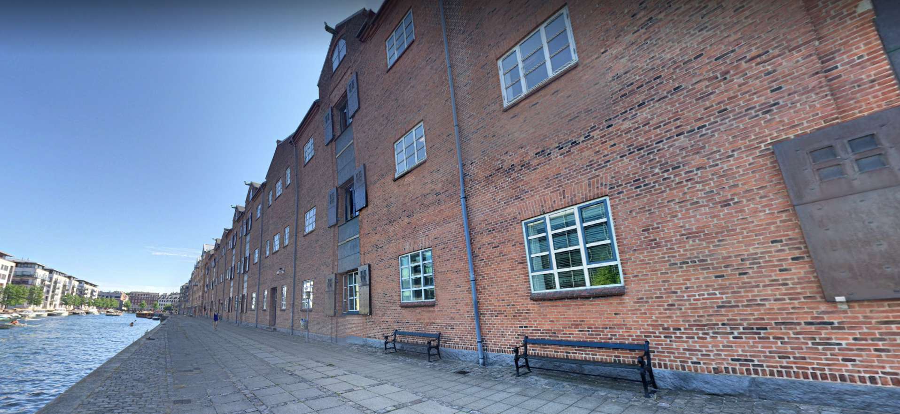

De Danske Sukkerfabrikker A/S (DDS) er en dansk sukkerproducent, som var en selvstændig virksomhed fra 1872 til 1989.
DDS blev stiftet den 20. april 1872 under C. F. Tietgens forsæde.
Formålet med sukkerfabrikkerne var at omdanne roerne til sukker.
Ved stiftelsen overtoges to ældre københavnske sukkerraffinaderier: Raffinaderiet "Phønix" og Helsingørsgades Sukkerraffinaderi.
I dag ligger der virksomheder som Copenhagen FinTech Lab, Finansforbundet P.A.P A/S og e-conomic regnskabsprogram. 